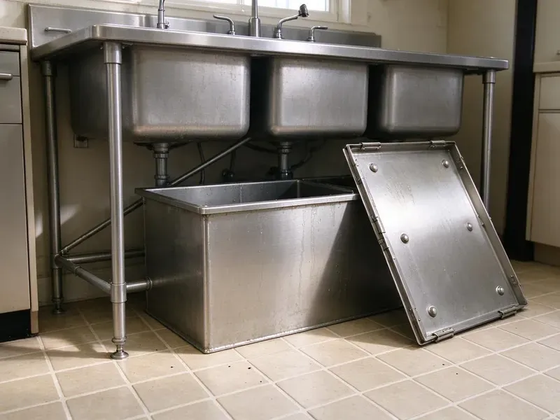

Insinkerator Installation in Chapel Hill, NC
HFN Plumbing installs InSinkErator Badger, Evolution and Pro series disposals across Chapel Hill, NC, and leak tests every one.
- Price Before Work Starts
- Upfront Pricing
- Next-Day Disposal Swaps
- Dishwasher Knockout Removed

Get a stronger InSinkErator installed this week in Chapel Hill, NC.
Our plumbers carry common Badger and Evolution models so most installs finish in one visit.
Local Disposal Installers in Chapel Hill, NC
HFN Plumbing handles the full InSinkErator setup: quick-lock mount, cord kit or hardwire, dishwasher knockout and discharge tube. Nothing gets left for you to finish. We test with running water, a small grind load and a dishwasher drain cycle, then check every joint before we pack up.
Work we handle every week:
- Discharge tube lined up with the trap
- Dishwasher knockout removal and air gap connection
- Badger, Evolution and Pro series models from 1/3 to 1 HP

Additional Kitchen Plumbing Services in Chapel Hill, NC
Our kitchen plumbing services in Chapel Hill, NC cover sinks, disposals, dishwashers, and grease traps so your kitchen stays clean, safe, and fully functional.


Customers
Why Choose HFN Plumbing for Insinkerator Installation in Chapel Hill, NC?
Horsepower is where people overspend. A Badger 5 handles most two-person kitchens. Big families who cook from scratch every night get more from a 3/4 HP Evolution, which grinds finer and runs quieter against stringy scraps like celery.
- Genuine Units, We install genuine InSinkErator units with the full factory warranty intact.
- Clean Mounting, Every sink flange gets fresh plumber's putty or a gasket so the bowl stays dry.
- Tested Grind, Each new InSinkErator runs a test grind with water on before we sign off.
Citywide Coverage
Cast iron drains in older neighborhoods and PVC in newer subdivisions are both routine for us across Chapel Hill. Old cast iron gets handled gently. Tightening onto a rusted cast iron arm can crack it, so we check first and quote a short replacement section if needed.
Experienced Team
Electrical basics are part of every plumber's training here. They test for ground before connecting. When a job needs a new circuit or a new outlet in the sink base, we bring in a licensed electrician rather than stretching a plumber's license past what it covers.
Safety-First Approach
Dishwasher drains get an air gap or a high loop on every install, because most plumbing codes require one to prevent backflow. Dirty sink water stays out of the dishwasher. Every joint gets sealed.
Trusted Certified Chapel Hill Plumbing Services Professionals
At HFN Plumbing, we are proud to offer certified plumbing services throughout Chapel Hill, NC. Credentials matter in this trade. Our plumbers hold recognized industry credentials, and they follow strict safety and quality rules on every repair, installation and maintenance call we run.
Call Us Now PHCC Plumbing Contractor Recognition
PHCC Plumbing Contractor Recognition Better Business Bureau (BBB) Accreditation
Better Business Bureau (BBB) Accreditation Angi Certified Pro
Angi Certified Pro ISO 9001 Quality Management Certification
ISO 9001 Quality Management CertificationGarbage Disposal Installation Services in Chapel Hill, NC
Upfront Disposal Installation Pricing in Chapel Hill, NC
Price depends mostly on two things: the unit you pick and how much needs to change under the sink. Straight swaps cost the least. A first-time install that needs a new flange and a new outlet costs more, because that is real labor and sometimes an electrician's visit too. We quote the job before any tools come out.

Commercial Disposer Installation in Chapel Hill, NC
Restaurant disposals are a different class of machine. Commercial units run 1 to 5 HP, usually on a dedicated circuit, and many need a water solenoid and a control panel mounted on the wall. We set the unit, plumb the water feed and coordinate with the electrician on the circuit. Expect an inspector to check it. Local code may also limit where a disposer can discharge relative to the grease interceptor, so we check that rule before the job starts.
Septic-Friendly Disposal Installs in Chapel Hill, NC
Homes on septic can run a disposal, but food solids add load to the tank. Rural homes near Chapel Hill often have both a septic system and a private well, which means pump, tank and water quality service all come up. InSinkErator's Septic Assist feeds an enzyme solution into the chamber during each run to start breaking down waste before the tank. We mount the cartridge and show you how to swap it. Scrape plates first.
Evolution Upgrade Installs in Chapel Hill, NC
Quiet is the main thing people notice after an Evolution install. The SoundSeal insulation cuts motor noise. What they notice later is fewer clogs downstream, because the multi-stage grind breaks fibrous scraps into much smaller pieces before they reach the trap and the branch line. We check for vibration with the unit running.
Hard Water and Disposals in Chapel Hill
A large share of homes across the state rely on private wells, and iron and manganese often leave rusty or dark stains on fixtures. Scale builds up on grind rings and drain tailpieces over the years. Scale makes a disposal noisy. Drainage slows too, since crust narrows the tailpiece and trap, and we check those parts before tying a new unit into them. Heavily scaled parts get replaced the same visit.
New Construction Disposal Installs in Chapel Hill
New builds and gut remodels get the disposal in two trips. At rough-in we set the drain height and confirm a switched outlet is in the sink base. The disposal itself waits. Once the countertop and sink are in and the faucet is set, we come back to hang the unit, connect the dishwasher and test everything with the water on.
Badger Disposal Install in Chapel Hill
Most replacement disposals in local kitchens are a Badger. These 1/3 to 3/4 HP units handle everyday scraps and fit nearly any standard sink base. The unit hangs on its quick-lock mount, the discharge tube goes on, a cord kit gets added if needed and we finish with a cold-water test grind. About an hour, usually.

Evolution Disposal Upgrades in Chapel Hill, NC
Stringy food is where these units earn their price. Corn husks and celery leaves jam a light unit. A Compact or Excel grinds in stages with more torque, so fibrous scraps get cut down instead of binding the impellers and tripping the reset. We check cabinet clearance first.
InSinkErator Installation Near Me in Chapel Hill, NC
Need an InSinkErator installed fast? We can usually get a local plumber out the same day. We keep the popular Badger and Evolution models on the truck, so most homes in the area need no special order and no second appointment. A Pro series unit may take an extra day.
Our Chapel Hill crew does disposal work most days of the week. Swaps are routine for them. That repetition matters, because the small mistakes, like a cross-threaded slip nut or a knockout plug left in, are the ones that cause a callback a week later. Each job ends with a water test.
HFN Plumbing at a Glance
- Fully licensed plumbing team covering Chapel Hill, NC
- 24/7 emergency service with same-day scheduling
- Clear written estimates, no hidden fees
- 4.8-star rated by 840+ North Carolina customers
Chapel Hill Map
Chapel Hill Information
- Population
- 62,043
- Area codes
- 919/843/984
- Service area
- Chapel Hill and communities within 40 miles
- Nearby
- Durham, Cary, Apex, Raleigh
Scale collects on grind rings and tailpieces faster than most people expect. A large share of homes across the state rely on private wells, and iron and manganese often leave rusty or dark stains on fixtures.
Expert Services
Call HFN Plumbing for honest, reliable plumbing from people who know the trade in Chapel Hill, NC.
Our Specialized Plumbing Services in Chapel Hill, NC
At HFN Plumbing, we handle the full list of plumbing services across Chapel Hill, NC. We go from leak detection all the way to full system installations, for homes and commercial buildings, and we do it quickly at a fair price. Explore our core services below:


How Our InSinkErator Installation Visit Goes in Chapel Hill, NC
This is how a disposal install goes with us.
Request a Quote
Call (980) 364-4317 to describe your setup and get a no-obligation quote. Expect questions about cabinet space and the old unit.
On-Site Check
The plumber checks the drain height and the outlet in your Chapel Hill kitchen. A model that will not fit gets flagged before anything comes apart.
Installation and Test
We mount the unit, make the power and plumbing connections and test it with running water. We wipe each joint dry and watch for weeps.
Frequently Asked Questions About Insinkerator Installation in Chapel Hill
Installed, most InSinkErator replacements cost between $300 and $800. A Badger 5 is the low end. An Evolution Excel lands near the top, and a first-time install that needs a new outlet or flange work can run past that range.
A hum with no grinding is the classic one. So is water dripping from the housing. Constant jams or a reset that trips every few days usually mean a unit near the end of its life.
Yes, but scale will build on the grind parts over time. Run cold water every time. Cleaning it now and then helps the drain, and stainless grind parts on Evolution units resist scale better.
Empty the cabinet under the sink. Pull out the trash can and the cleaning bottles. A unit you bought yourself can stay boxed nearby, and the tech will confirm the model and mount before removing the old one.
For light use, a Badger 5 or 5XP does the job. Heavy cooking or a wish for quiet calls for an Evolution Compact or Excel. On septic, the Septic Assist is the one.
Clear the sink base completely. The plumber needs room to lie under the sink. If you already bought a unit, check that it matches the horsepower we discussed, and leave the old one in place so we can see how it was mounted and wired.
Yes, same day in most cases. A broken disposal backs up the sink fast. A morning call usually gets a plumber there by afternoon with a unit on board, and the sink works again by dinner.
Badgers are single-stage grinders with lighter motors. They handle everyday scraps fine. Evolution units grind in two or three stages, have more insulation and more torque, and handle fibrous food like celery and corn husks that can stall a Badger and trip its overload.
What People Are Saying About Our Plumbing Experts?

Laura S.
Our 40 gallon tank started leaking from the bottom after thirteen years. The tech hauled the old one out, set a new unit with a fresh expansion tank, and had hot water running in about four hours. He took the old tank with him too.
Water Heater Replacement · Durham, NC
Marcus H.
Grease from the fryer line kept clogging the kitchen drain at my diner. HFN Plumbing hydro jetted the line after closing, showed me the buildup on camera, and set us up on a quarterly cleaning so it does not catch us on a Friday again.
Drain Cleaning · Durham, NC
Rachel N.
Hard water was leaving white crust on every faucet and our dishwasher was struggling. The tech tested the water, recommended a softener sized for a family of five, and installed it with a bypass valve in one afternoon. The spots on our glasses are gone.
Water Softener · Wake Forest, NC
Greg S.
I manage a small strip center with six tenants. HFN Plumbing handles our annual backflow testing and fixed a recurring clog in the shared sewer line that had been backing into the nail salon. Their reports come in clean and on time.
Commercial Plumbing · Chapel Hill, NC
Carlos V.
Our house still had galvanized pipe, and upstairs the shower was a trickle. The crew repiped everything in PEX over three days and patched every drywall hole before they left. The pressure difference is night and day.
Repiping · Durham, NC
Diane F.
My kitchen faucet had dripped for months and I finally got tired of hearing it at night. HFN Plumbing came out the next morning, replaced the cartridge and the O rings, and tightened a loose base that was letting water under the sink.
Faucet Repair · Apex, NC